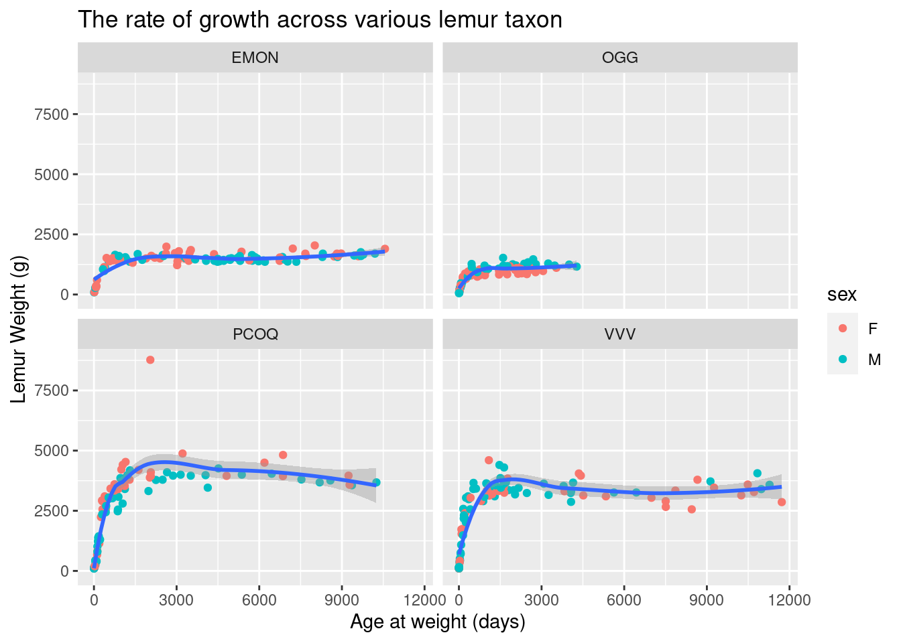
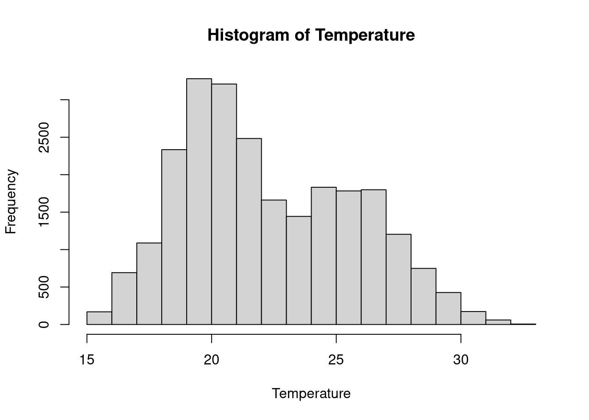
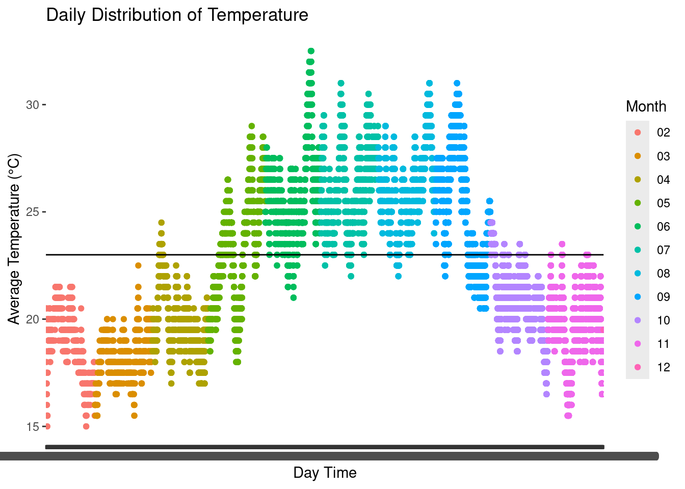
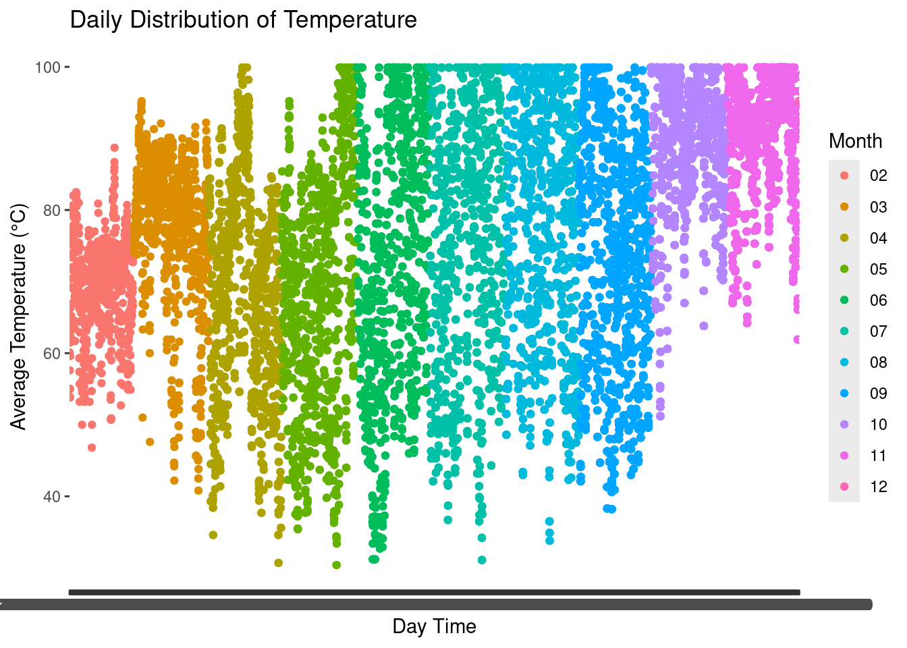
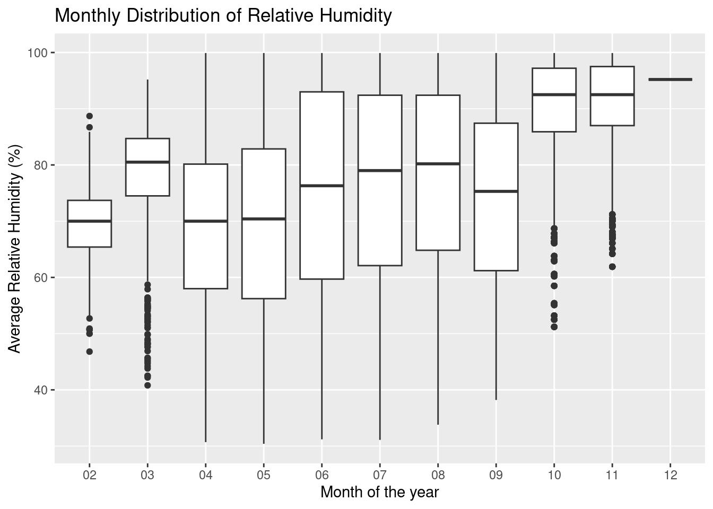
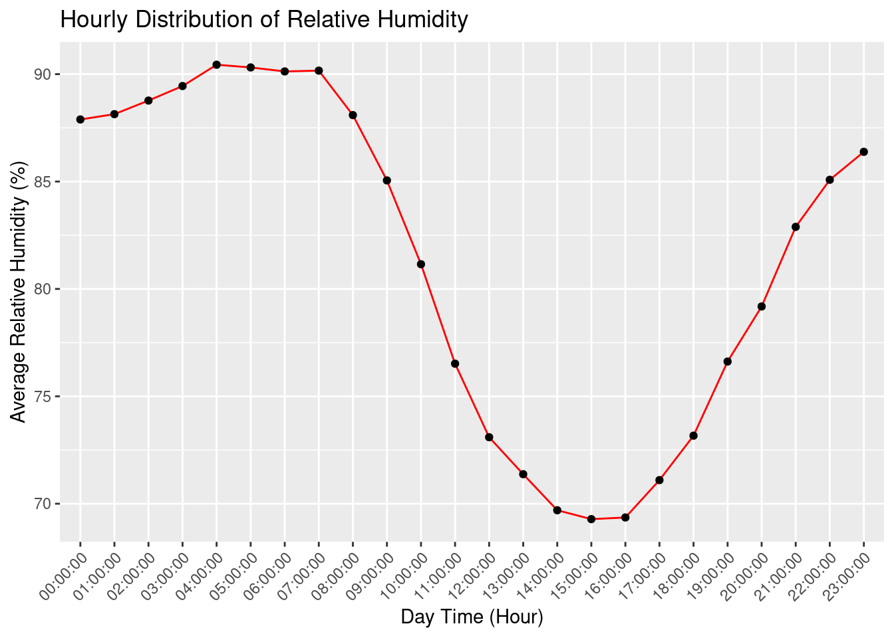

Lemur data Visualization with Tidyverse
Load Package and data. The data has been cleaned
library(tidyverse)── Attaching core tidyverse packages ──────────────────────── tidyverse 2.0.0 ──
✔ dplyr 1.1.4 ✔ readr 2.1.5
✔ forcats 1.0.0 ✔ stringr 1.5.1
✔ ggplot2 3.4.4 ✔ tibble 3.2.1
✔ lubridate 1.9.3 ✔ tidyr 1.3.0
✔ purrr 1.0.2
── Conflicts ────────────────────────────────────────── tidyverse_conflicts() ──
✖ dplyr::filter() masks stats::filter()
✖ dplyr::lag() masks stats::lag()
ℹ Use the conflicted package (<http://conflicted.r-lib.org/>) to force all conflicts to become errors#library(janitor)
My_data <- readr::read_csv('https://raw.githubusercontent.com/rfordatascience/tidytuesday/master/data/2021/2021-08-24/lemur_data.csv')Rows: 82609 Columns: 54
── Column specification ────────────────────────────────────────────────────────
Delimiter: ","
chr (19): taxon, dlc_id, hybrid, sex, name, current_resident, stud_book, es...
dbl (27): birth_month, litter_size, expected_gestation, concep_month, dam_a...
date (8): dob, estimated_concep, dam_dob, sire_dob, dod, weight_date, conce...
ℹ Use `spec()` to retrieve the full column specification for this data.
ℹ Specify the column types or set `show_col_types = FALSE` to quiet this message.#My_data <- My_data |>
# clean_names()Visualize the data distribution on Bar_Chart based on the basic class(taxon) And Distinct lemur.
My_data |>
distinct(dlc_id, .keep_all = TRUE) |>
ggplot(aes(y=fct_infreq(taxon), fill=birth_type)) +
labs(y = "Taxon of lemur", x = "Lemur taxon Count",
title = "Distribution of lemur taxon showing the type of birth",
caption = "Birth Type: captive-born (CB), wild-born (WB) and unknown (UNK)") +
geom_bar() 
Let us restrict our search to those born at the Duke Lemur Center.
my_data <-
My_data |>
filter(birth_institution == "Duke Lemur Center")With random sampling of 100 Species of each taxon, let’s view their growth rate. by plotting age to weigh_gain.(Scatter_Plot)
my_data |>
group_by(taxon) |>
sample_n(100) |>
ggplot(aes(x= age_at_wt_d, y= weight_g)) +
geom_point(aes(color = hybrid)) +
labs(x = "Age at weight", y = "Lemur Weight",
title = "Plots showing the rate of growth across various lemur taxon") +
geom_smooth(method = 'loess', formula = 'y ~ x') +
facet_wrap(~taxon)
Scatter Plot Showing the weight distribution of four lemur taxon of age between 2-6 yrs
my_data |>
filter(taxon %in% c("PCOQ", "VVV", "EMON", "OGG")) |>
group_by(taxon) |>
sample_n(100) |>
ggplot(aes(x= age_at_wt_d, y= weight_g)) +
geom_point(aes(color = hybrid)) +
labs(x = "Age at weight", y = "Lemur Weight",
title = "Plots showing the rate of growth across various lemur taxon") +
geom_smooth(method = 'loess', formula = 'y ~ x') +
facet_wrap(~taxon)
Density Plot Showing the weight distribution of four lemur taxon of weight less than 6000g and age between 2-6 yrs
my_data |>
filter(weight_g <= 6000) |>
#filter((age_category == "IJ" | age_category == "young_adult") & (taxon %in% c("PCOQ", "VVV", "MMUR", "GMOH")))
filter((age_at_wt_y >= 2 & age_at_wt_y <=6) & (taxon %in% c("PCOQ", "VVV", "EMON", "OGG"))) |>
group_by(taxon) |>
ggplot(aes(x = weight_g, color = taxon, fill= taxon)) +
xlab("Lm=emur Weight") +
geom_density(linewidth = 0.75, alpha= 0.2)
We Can Confirm the above plot using a bar plot and now selecting the taxon at certain age.
my_data |>
filter(age_at_wt_y >= 2 & age_at_wt_y <=6) |>
group_by(taxon) |>
slice_sample(n=14) |>
summarise(Avg = mean(weight_g), n=n()) |>
ggplot(aes(x=Avg, y= fct_reorder(taxon, Avg))) +
labs(x = "Average weight", y = "Lemur Taxon",
title = "Plot showing the Average weight across various lemur taxon between age 2-6 yrs") +
geom_col()
We Can Confirm the above plot using a bar plot and now selecting the taxon at certain categories.
my_data |>
filter(age_category == "IJ" | age_category == "young_adult") |>
group_by(taxon) |>
slice_sample(n = 27) |>
summarise(Avg = mean(weight_g)) |>
ggplot(aes(x=Avg, y= fct_reorder(taxon, Avg))) +
labs(x = "Average weight", y = "Lemur Taxon",
title = "Plot showing the average weight Of IJ and young adult Lemur in different taxon") +
geom_col()
Age at birth also have a positive correlation with adult age/growth rate across lemur taxon
my_datas <- my_data |>
filter(weight_g != 0 & !(is.na(weight_g)))
x <- my_datas |>
filter(age_at_wt_d == 0) |>
group_by(taxon) |>
summarise(Exp_Gestation = mean(expected_gestation), Avg_wgt_birth = mean(weight_g))
y <- my_datas |>
filter(age_at_wt_y >= 2 & age_at_wt_y <=6) |>
group_by(taxon) |>
slice_sample(n = 14) |>
summarise(Avg_wgt = mean(weight_g), n= n())
#put all data frames into list
texas = merge(x,y, by = "taxon")
texas |>
ggplot(aes(Avg_wgt_birth, Avg_wgt, label = taxon)) +
geom_point() +
geom_label()
texas taxon Exp_Gestation Avg_wgt_birth Avg_wgt n
1 CMED 62 13.64000 237.6429 14
2 DMAD 165 103.07619 2470.0000 14
3 ECOL 123 58.18571 2422.4286 14
4 ECOR 124 54.24000 1622.4286 14
5 EFLA 124 83.07600 2309.2857 14
6 EFUL 120 73.00000 2663.8214 14
7 EMAC 120 71.18000 2454.3929 14
8 EMON 127 59.85000 1533.6071 14
9 ERUB 120 81.58333 2127.0000 14
10 ERUF 120 70.44667 2035.8571 14
11 EUL 120 74.78571 2105.6071 14
12 GMOH 124 12.66471 180.3571 14
13 HGG 145 45.00000 961.0714 14
14 LCAT 138 62.20930 2338.0000 14
15 LTAR 167 11.91111 183.1429 14
16 MMUR 63 8.12500 77.0000 14
17 MZAZ 90 16.60000 288.5714 14
18 NCOU 193 49.30000 1244.2143 14
19 NPYG 185 21.58200 536.0000 14
20 OGG 129 48.49375 1084.0286 14
21 PCOQ 160 104.11000 3706.4286 14
22 PPOT 170 30.63333 855.6429 14
23 VAR 98 112.00000 3393.5000 14
24 VRUB 103 109.27778 3485.0714 14
25 VVV 104 105.11786 3354.2143 14Box-plot of Four lemur taxon showing weight distribution
my_data |>
#filter((age_category == "IJ" | age_category == "young_adult") & (taxon %in% c("PCOQ", "VVV", "MMUR", "GMOH")))
filter((age_at_wt_y >= 2 & age_at_wt_y <=6) & (taxon %in% c("PCOQ", "VVV", "EMON", "OGG"))) |>
group_by(taxon) |>
slice_sample(n=14) |>
relocate(sex, age_at_wt_y, weight_g, .after = taxon) |>
ggplot(aes(x = taxon, y=weight_g)) +
geom_boxplot()
#select(taxon, sex, age_at_wt_d, weight_g) |> Histogram of MMUR weight_g Lemur Taxon
my_data |>
filter((age_at_wt_y >= 2 & age_at_wt_y <=6) & taxon == "MMUR") |>
ggplot(aes(x = weight_g)) +
geom_histogram(bins = 30)
Histogram of PCOQ weight_g Lemur Taxon
my_data |>
#filter(age_category == "young_adult" & taxon == "PCOQ") |>
filter((age_at_wt_y >= 2 & age_at_wt_y <=3) & taxon == "PCOQ") |>
ggplot(aes(x = weight_g)) +
geom_histogram(binwidth = 120)
VVV
my_data |>
filter(taxon == "VVV") |>
ggplot(aes(x= age_at_wt_d, y = weight_g,
color = age_category, fill = age_category
)) +
geom_point(shape = 22, stroke = 0) +
ylab("Lemur Weigth") +
geom_smooth(aes(color = age_category), method = "loess") +
scale_color_manual(values = c("lightblue3", "black", "yellow")) +
scale_fill_manual(values = c("black", "red", "brown"))`geom_smooth()` using formula = 'y ~ x'
my_data |>
filter(age_at_wt_d == 0 & taxon == "PCOQ") |>
select(taxon, age_at_wt_d, weight_g, dam_age_at_concep_y) |>
ggplot(aes(x= weight_g, y = dam_age_at_concep_y, color =taxon)) +
geom_point()
my_data |>
filter(sex == "F" & (age_category == "adult" ) & !is.na(n_known_offspring)) |>
group_by(taxon) |>
slice_sample(n = 10) |>
summarise(No_of_offspring = sum(n_known_offspring),
Dam_minimum_age_at_conception = mean(r_min_dam_age_at_concep_y), n=n()) |>
ggplot(aes(No_of_offspring,Dam_minimum_age_at_conception)) +
geom_point()
my_data |>
group_by(taxon) |>
slice_head(n = 2) |>
relocate(r_min_dam_age_at_concep_y, .before = dlc_id)# A tibble: 54 × 54
# Groups: taxon [27]
taxon r_min_dam_age_at_concep_y dlc_id hybrid sex name current_resident
<chr> <dbl> <chr> <chr> <chr> <chr> <chr>
1 CMED 0.79 1601 N M LINUS N
2 CMED 0.79 1601 N M LINUS N
3 DMAD 4.22 6480 N M BLUE DE… N
4 DMAD 4.22 6480 N M BLUE DE… N
5 EALB 2.57 3510 N F HAGAR N
6 EALB 2.57 3510 N F HAGAR N
7 ECOL 1.64 2540 N F NADIA N
8 ECOL 1.64 2540 N F NADIA N
9 ECOR 1.7 5531 N M PTOLOMY N
10 ECOR 1.7 5531 N M PTOLOMY N
# ℹ 44 more rows
# ℹ 47 more variables: stud_book <chr>, dob <date>, birth_month <dbl>,
# estimated_dob <chr>, birth_type <chr>, birth_institution <chr>,
# litter_size <dbl>, expected_gestation <dbl>, estimated_concep <date>,
# concep_month <dbl>, dam_id <chr>, dam_name <chr>, dam_taxon <chr>,
# dam_dob <date>, dam_age_at_concep_y <dbl>, sire_id <chr>, sire_name <chr>,
# sire_taxon <chr>, sire_dob <date>, sire_age_at_concep_y <dbl>, …my_data %>%
filter(taxon == "PCOQ") %>%
select(taxon, age_at_wt_d, weight_g)# A tibble: 7,994 × 3
taxon age_at_wt_d weight_g
<chr> <dbl> <dbl>
1 PCOQ 1 107
2 PCOQ 15 172
3 PCOQ 21 206
4 PCOQ 28 241
5 PCOQ 40 317
6 PCOQ 48 372
7 PCOQ 56 432
8 PCOQ 62 486
9 PCOQ 69 532
10 PCOQ 76 581
# ℹ 7,984 more rows